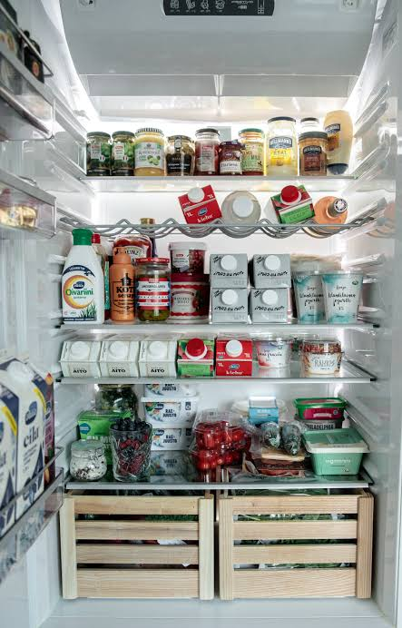
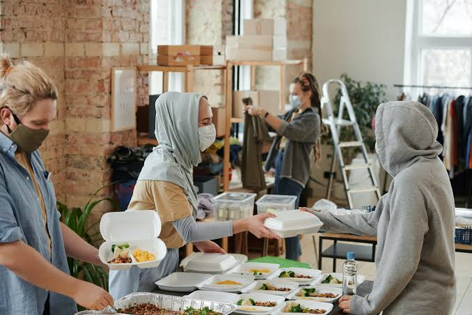
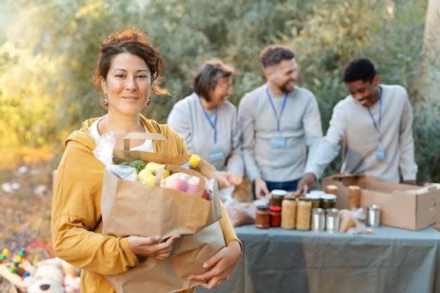

STEPS TAKEN TO REDUCE FOOD WASTE

Introduction:
- Food Waste Index 2021 report reveals that people wasted 931 million tonnes of food material in the year 2019, out of which 61 % is contributed by households, 26 % by food services, and 13 % by retail; Indian households waste 50 kilograms of food annually per individual.
- The large quantities of food waste created by the worldwide food system is a critical issue that is getting major focus owing to its environmental and socio- economic impacts.
- Internationally, since visibility regarding sustainability, food wastage and impoverishment is on the high, the requirement to understand the behaviour patterns behind reducing food wastage and food insecurity is the need of the hour.
- Food plays a critical part in the economic, social, political and cultural lives of every nation. The citizens of every nation can help substantially to economic, socio- political and environmental sustainability by embracing and rejecting certain behaviour patterns with regard to food.
- Hence, it is crucial to analyse and acknowledge the motivational elements, structural components and processes which aids or come in the way of reducing food waste behaviour.
- Therefore it is critical to study and understand the theories behind food wastage behaviour and ways to change them constructively.
- TPB by Ajzen seems more significant owing to its equitable way of calculating the components of food waste reduction or avoidance behaviour in particular.
Step-1:
- We collect food from different areas like from marriages,hotels and party areas.We store some of the food in the nearby food banks to fill the stomachs of people,who need food urgently.

Step-2:
- We will distribute the food to people,who are starving with lack of food in areas like:
- On roadsides
- Bus Stands
- Railway Stations
- and all other public places.

Step-3:
- After distributing in the above areas,if still food remains then, we will distribute food to the people in Slum areas.